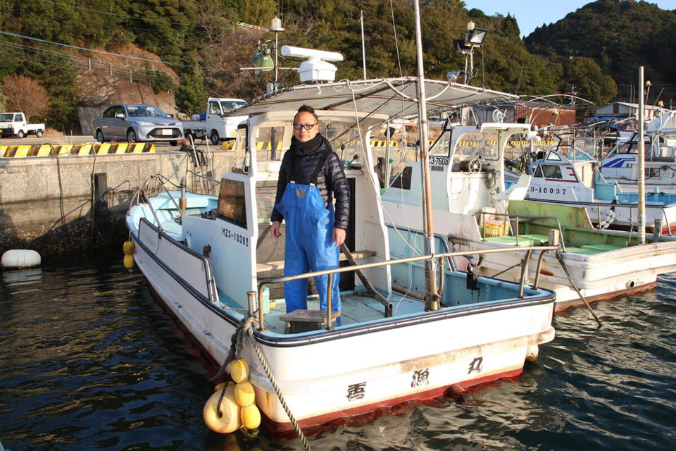
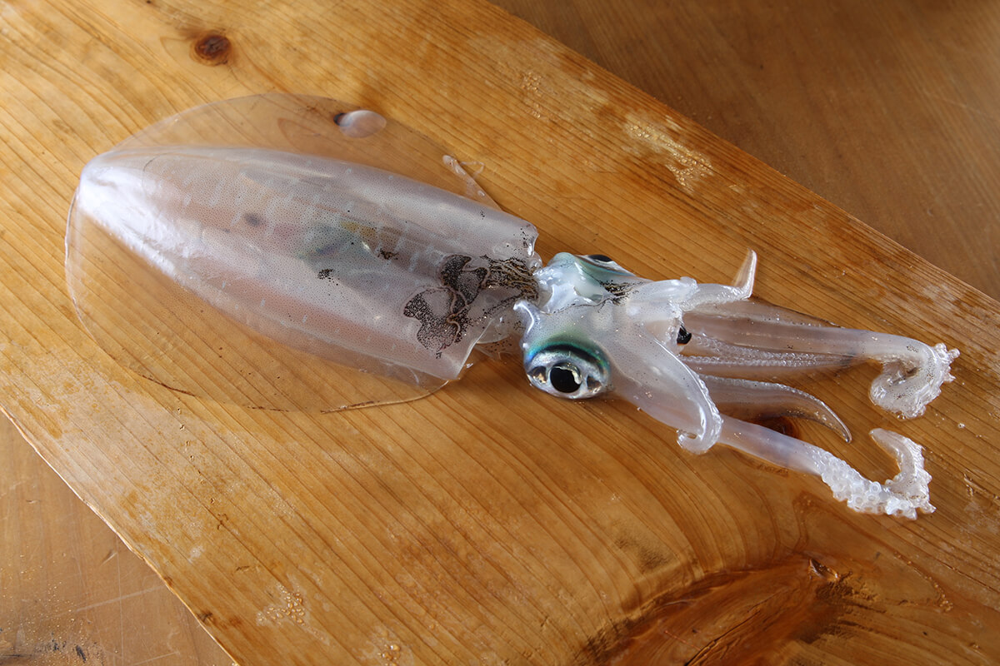
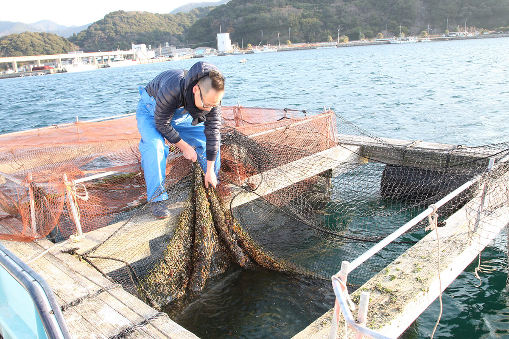
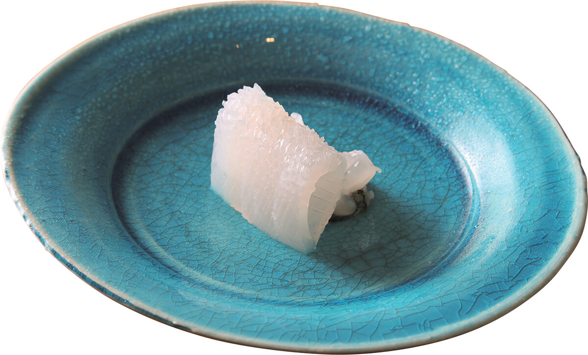
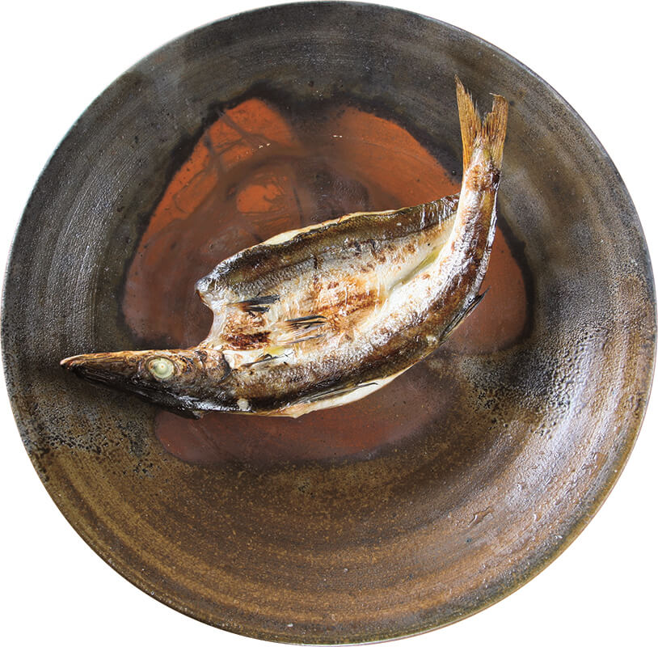
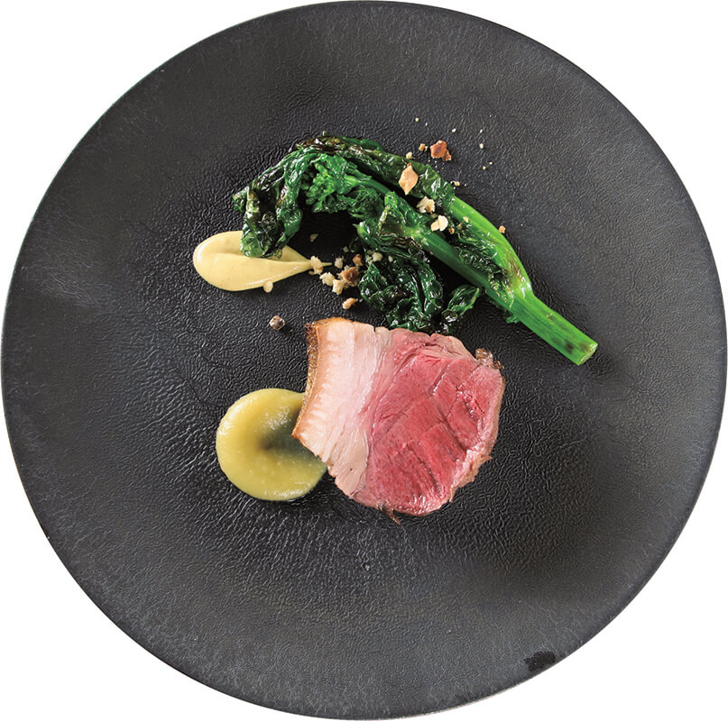
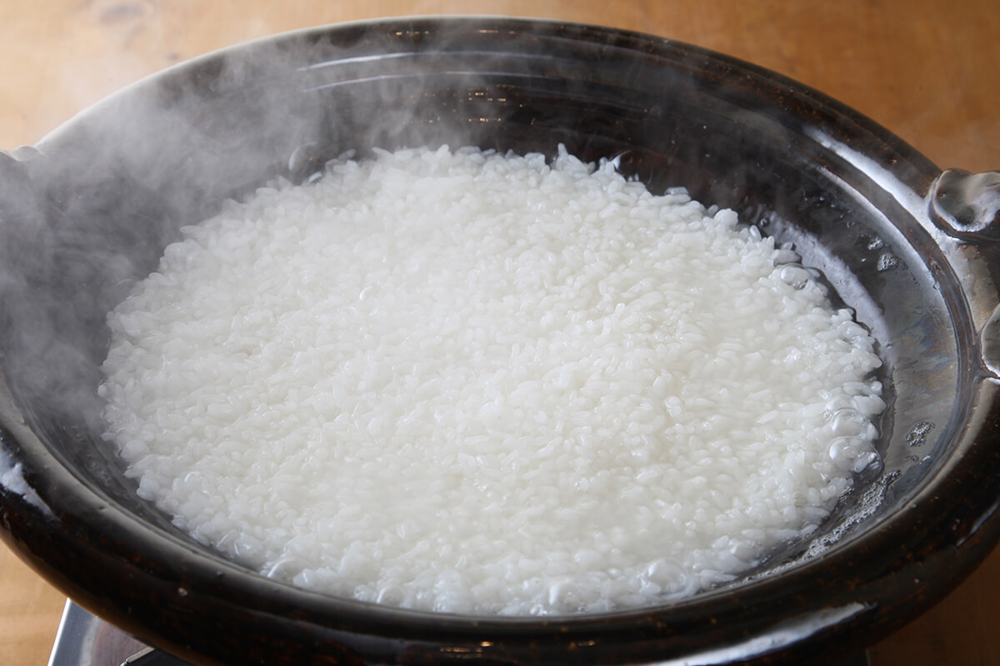

Префектура Миядзаки · Нобэока · еда
Kitaura Zenryomaru в Нобэоке: отец ловит рыбу, сын её готовит

В Нобэоке, на севере префектуры Миядзаки, есть ресторан, где готовят рыбу, которую ловит отец хозяина. Ничего редкого и дорогого в ней нет, и в этом весь смысл: повар не хочет показывать себя, он хочет показать продукт.
Утро
Садок в море
Восемь утра. Миядзаки считается южным краем, но в этот день над маленьким рыбацким портом дует сильный северный ветер. Хозяин ресторана Kitaura Zenryomaru поднимается на борт семейной лодки «Дзэнрё-мару» и минут пять идёт в открытое море. Его цель: плавучий садок. Отец хозяина уже не рыбачит профессионально, но выходит в море, когда ему вздумается, и держит улов здесь живым.
«Отец наловил кальмаров, вот и заехал»
хозяин ресторана

Сам ресторан стоит в Нобэоке, примерно в сорока минутах езды к югу от порта. Его необычное название взято от имени семейной лодки. Отец ловит, сын готовит. Хозяин скромно говорит, что отец приносит «самую обычную рыбу, ничего особенного», но он сам помогал на лодке и хорошо знает, чего стоит этот улов.

Проверив садок, хозяин объезжает ещё несколько портов поблизости, смотрит рыбу и выбирает улов дня. Овощи он тоже покупает сам, только увидев их своими глазами. Из дома он выезжает в восемь утра, и нередко попадает в ресторан лишь к трём часам дня, но никогда не торопится.
«Когда продукты собраны, остаётся только раскрыть их вкус»
хозяин ресторана
Японское слово «рёри», готовка, пишется двумя иероглифами: «измерять» и «порядок вещей». Хозяин понимает его буквально: узнать, откуда пришёл продукт, подумать, почему с ним нужно поступить так, а не иначе, и сделать только необходимое. В этом, пожалуй, и есть исходный смысл кулинарии.
Ресторан
«Просто ресторан» на сорок мест
«У нас просто ресторан», скромничает хозяин, но Kitaura Zenryomaru устроен шире, чем кажется. Бетонное здание на краю торгового квартала Нобэоки открылось в конце 2000-х годов. На двух этажах почти сорок мест: здесь отмечают встречи подруг, семейные праздники и собираются коллегами, а меню подбирают под каждый повод. Это ресторан для своих, для местных.

Но у стойки на восемь мест на первом этаже подают совсем другой курс. Это сердце ресторана: хозяин готовит, раскладывает по тарелкам и подаёт прямо перед гостями, места только по предварительной записи. Сначала сюда ходили постоянные гости, которые бывали здесь с самого открытия, потом слух разошёлся, к середине 2010-х стойка стала заполняться каждый вечер, и в 2019 году попасть сюда было уже непросто.
По отдельным блюдам секрет не разгадать. Повар не старается удивить или развлечь, не выпячивает себя и даже природу Миядзаки специально не подчёркивает. На тарелке тихо лежат знакомые продукты. Но стоит попробовать, и улыбка появляется сама.

Возьмём кальмара аори. В Токио его любят в мае, когда мясо становится толстым и вязким, а зимний кальмар Миядзаки ценят за чистую, хрусткую текстуру. Дело не в том, какой лучше: удивительно, что хорош каждый по-своему. Пока хозяин готовит, он почти не разговаривает: хочет, чтобы гости сосредоточились на еде и прислушались к своим ощущениям.
Курс на первом этаже стоил 8700 иен в 2019 году.
Рис
Главное блюдо в конце
После рыбы, овощей и мяса наконец приходит главное блюдо. Им оказывается рис местного сорта «Хинохикари», сваренный в глиняном горшке донабэ. Сначала подают одну ложку риса в тот миг, когда он только-только сварился. Зёрна, которые как раз превращаются из сырого риса в готовый, напитаны водой, сочные и сладкие, с лёгкой твёрдостью внутри, как паста аль денте. Такого риса дома не попробуешь. Затем приносят хрустящую поджаристую корочку со дна горшка. А что будет дальше, лучше узнать самому.

Почему хозяин пришёл к кухне, которая ничего не навязывает? По его словам, всё дело в годах, когда он рыбачил и рисковал жизнью. Исказить продукт своевольной приправой ради самолюбия повара значит проявить неуважение и к рыбе, и к рыбаку. Главным на тарелке должен быть продукт.

В 2019 году у хозяина была небольшая мечта: уехать на природу. Место он уже выбрал, такое, где не видно ничего искусственного и ничего коммерческого. Судя по всему, оно находится в национальном парке. Задача непростая, но мечты для того и существуют, чтобы их исполнять.
Kitaura Zenryomaru
- Адрес
- префектура Миядзаки, Нобэока, Хонмати, 1-3-14
- Телефон
- +81 982-31-0051
- Часы работы
- 18:00–21:00 (последний заказ), только по предварительной записи
- Выходные
- воскресенье
- Цены / Вход
- курс у стойки на 1-м этаже 8700 иен
- Сайт
- zenryomaru.jp
Фото: Мунэаки Маэда.